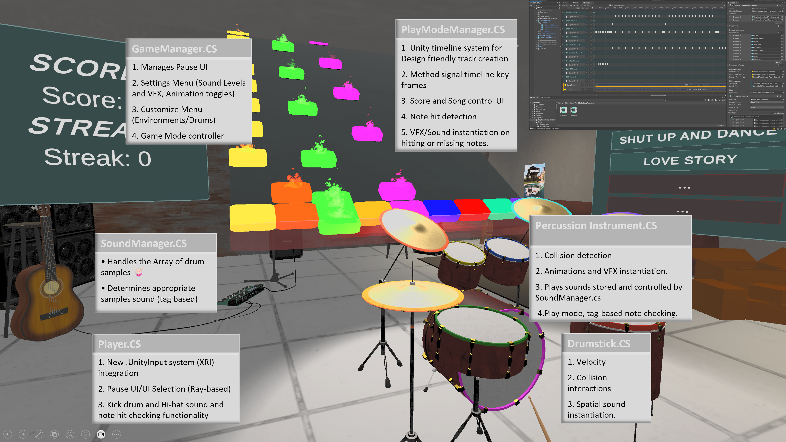
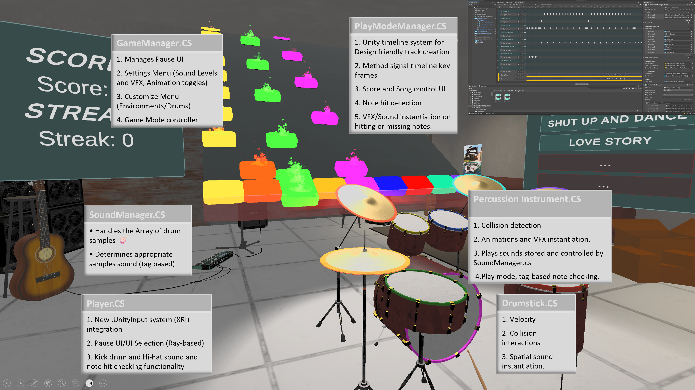
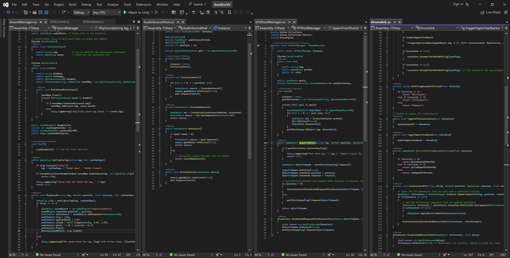
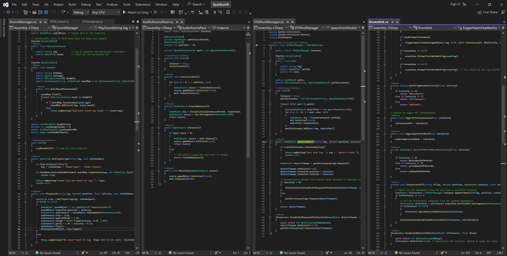

BeatBox-VR, an immersive drumming experience
A Goldsmiths, University of London Virtual Reality Project

Personal Introduction
My name is Joshua J. Davies, a Unity Developer and VR Enthusiast with a passion for creating immersive and interactive virtual reality experiences.
The Team
Our team was composed of talented set of individuals, each bringing their own expertise and unique skill sets:
Joshua J. Davies (me): Project Manager, Lead Developer/Programmer, Audio, and interaction designer.
I Oversaw four 2-week sprints project sprints, ensured milestones were met, and communicated effectively throughout. Designed and programmed the core features/ mechanics of the game, implemented audio visual integration and feedback loops.
Other team members
Nathan Thomas-Benke - (Sound Designer, Programmer, UI)Jake Boulton - (UI/UX Design, 3D Artist)
Mai Ye - (VFX Artist, programmer)
Hwanjoon Jang -(QA, UI/UX Design)


Concept and Theme
Our project, "BeatBox-VR". is a virtual reality drumming experience that allows players to play and interact with a full drum set in a 3D environment. Inspired by the power of music and the immersive capabilities of VR technology, our objective was to create a game that not only teaches the fundamentals of drumming but also provides an entertaining platform for advanced musicians to practice and perform.
The concept was born out of the desire to make musical education accessible and engaging, utilizing the tactile and immersive qualities of VR to simulate a realistic drumming experience. By incorporating features such as customizable drum kits, dynamic sound based on player interaction, and a reactive environment that changes with the player's performance, we aimed to cater to both educational and entertainment aspects.
Related Works
In this section I will discuss and reflect on how related works influenced and informed our project
Paradiddle
What is it? How it influenced our design
Rockband and Guitar Hero (Rythm Games)
What is it? How it influenced our design
Piano Vision
What is it? How it influenced our design
-
Key-Points:
- Simple but effective gameplay loops and Systems
- Real time play space manipulation
- Well established game dynamics real-time feedback


User Journey Overview
The journey begins in the Free-play mode, where user can familiarize themselves with drum set and interactions. From there the player may open the pause menu, contained here are options such as Entering different modes (Free-Play, Play Along, Tutorial and Challenge Mode), Drum and environment customization and settings including toggling Haptics, VFX and drum animations.

 

Detailed Contribution Breakdown and Timeline
Weeks 1-2: Establishing Core Mechanics and Sound Feedback
Initialized the project by setting up a basic VR environment in Unity and configuring the XR settings for headset and controller tracking.
Developed the foundational drumstick interaction system. This involved programming VR controllers to detect collisions with virtual drums and cymbals, triggering corresponding sounds. The collision detection logic meticulously differentiates between various parts of the drum kit to produce accurate sound feedback.
Weeks 3-4: Implementing UI and Enhancing Sound Design
Focused on user interface design, crafting a menu system that allows users to navigate through game modes seamlessly. Implemented Unity's UI toolkit to create responsive and visually appealing buttons and sliders for settings like volume control and difficulty selection.
Enhanced the audio system by integrating spatial audio effects, providing a more immersive playing experience. This involved adjusting the audio source's spatial blend parameters and utilizing Unity's 3D sound settings to mimic real-life acoustics.
Weeks 5-6: Adding Visual Feedback and Performance Tweaks
Introduced visual feedback for drum hits using particle effects and animations. For each drum and cymbal, a specific animation that mimics the real-life movement and rebound, enriching the player's visual experience.
Tackled performance optimization to ensure a smooth experience across all VR devices. This included implementing object pooling for the particle systems and audio clips, significantly reducing the overhead caused by frequent instantiations during gameplay.
Weeks 7-8: Refining PlayModeManager and Customization Options
Revamped the PlayModeManager to support dynamic song selection and seamless transitions between gameplay states. This involved writing robust logic to manage game states, including song playing, pausing, and switching, alongside ensuring flawless synchronization between the visual timeline and audio playback.
Developed a drum kit customization feature, enabling players to personalize their virtual drum setup. Implemented a drag-and-drop interface within the VR environment, allowing users to reposition and rotate drums and cymbals to their liking. Persistence was achieved by saving the configurations to user profiles.

 

Up-Surge Mechanics
Advanced Hi-Hat System
The new HiHat system is designed to provide realistic audio and visual feedback based on the player's interactions in a virtual environment. The system differentiates between an open and closed HiHat, allowing for nuanced sound production that mimics real-life drumming experiences.
Key Components
Interaction Detection
The system uses collider triggers on the drumstick and the HiHat to detect interactions.
When the drumstick collides with the HiHat, the system checks whether the HiHat is open or closed based on the player’s input or pedal position.
Sound Management
Depending on whether the HiHat is open or closed, different sound clips are triggered.
This is handled by the SoundManager, which plays the appropriate AudioClip using an AudioSource pooled from an object pool for efficient resource management.
Velocity Sensitivity
The system considers the velocity of the drumstick at the point of impact to determine the intensity of the sound and the visual effects.
Higher velocities result in louder sounds and more pronounced visual effects.
Object Pooling Systems for VFX and AudioSources
The object pooling system in the VR drumming simulation optimizes performance by managing visual effects (VFX) and audio sources through dedicated pools. This approach is essential in VR, where maintaining high frame rates and reducing computational overhead is critical for user experience.
Pool Setup
VFX Pool: Managed by VFXPoolManager, each pool for different types of VFX like sparks or smoke is pre-populated at game start with deactivated GameObjects ready for use.
AudioSource Pool: Similar to VFX, a pool of AudioSource components is maintained on pre-configured GameObjects, allowing quick activation and use.
Usage and Lifecycle Management:
VFX Usage: Upon events like a drumstick hitting the HiHat, a VFX instance is retrieved, positioned, and activated at the interaction point. After a set duration (vfxLifetime), it is deactivated and returned to the pool.
AudioSource Usage: When sound playback is required, an AudioSource is similarly activated, configured with the appropriate audio clip and settings (volume and pitch adjusted for impact intensity), and later deactivated.
Both systems use a lifecycle approach where components are temporarily activated and then returned to their respective pools to minimize creation and destruction overhead.
Dynamic Configuration
VFX instances might be modified based on interaction specifics, such as impact velocity, using scripts that adjust particle system parameters for more realistic effects.
Audio sources can dynamically adjust properties like volume and pitch based on the gameplay context to enhance the audio realism.
Performance Benefits
Reduced Instantiation Overhead: Both pools significantly cut down the computational costs by avoiding runtime instantiation and destruction, crucial for VR performance.
Enhanced Responsiveness and Scalability: Reusing GameObjects ensures the system remains responsive and can scale according to gameplay demands without degrading performance.
Improved Resource Management: Efficiently manages limited resources, reducing garbage collection and frame drops, which are pivotal in maintaining immersive VR experiences.
Conclusions and Reflections
This project challenged and expanded my skills in VR development, from creating immersive audio experiences to designing intuitive user interfaces and complex gameplay mechanics. The advanced hi-hat system and customizable drum kit features not only pushed the boundaries of realism in VR drumming games but also provided users with a deeply personalized and engaging experience. By continuously optimizing performance and refining gameplay mechanics, we aimed to deliver an exceptional virtual drumming adventure that resonates with both novice players and seasoned drummers alike.
Reflecting on our project, I believe we substantially achieved our foundational goals, creating an immersive VR drumming experience that both educates and entertains. The journey from concept to completion has been a profound learning curve, shaped by both our ambitions and the limitations we encountered along the way. Central to our development was the creation of a responsive and realistic drumming simulator, designed to bridge the gap between the physical joy of drumming and the virtual realm of learning.
One of the paramount challenges was engineering a system that could accurately track drumstick movements and translate them into immediate audiovisual feedback. This required a deep dive into Unity's physics and audio systems, demanding a nuanced understanding of virtual interactions and their real-world implications. The goal was to ensure that the virtual drumsticks not only moved naturally but also produced sound with a fidelity that mimicked real-life drumming. Achieving this level of realism was crucial for immersion and educational value, and it pushed our team to innovate and iterate continually.
Our project also underscored the importance of performance optimization for VR applications. Striving for a seamless experience across diverse VR hardware, we prioritized efficient asset management and the judicious use of system resources. This focus on optimization was a critical learning area, highlighting the balance between high-quality visuals and the performance constraints inherent to VR technology.
As the project evolved, we recognized the need for more sophisticated systems to manage the application's growing complexity. This realization led to a concerted effort to refactor our existing codebase, incorporating principles of class abstraction, virtual interface classes, and improved garbage collection handling. By transitioning to a more modular and scalable architecture, we aimed to enhance maintainability and facilitate future expansions.
Looking forward, I am keen to continue refining our application, focusing on the integration of centralized systems that streamline project contributions and leverage advanced programming paradigms. This will include enhancing our use of spatial audio to deepen the sense of presence and realism, a crucial aspect of immersive VR experiences.
In hindsight, the project was a testament to the power of collaboration, technical innovation, and the relentless pursuit of quality in VR development. While we navigated through technical complexities and project management hurdles, the experience was immensely rewarding. It has not only advanced our understanding of VR's potential in educational tools but also honed our skills in creating engaging, interactive experiences that resonate with users.
In summary, our journey through this project has been both challenging and enlightening. It has equipped us with invaluable insights into VR development, project management, and the collaborative process of bringing a complex vision to life. As we look to the future, I am excited about the prospects of further refining our application and exploring new frontiers in VR technology.